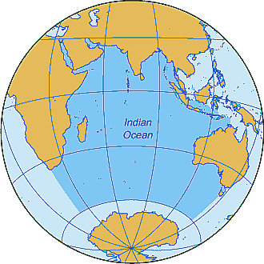

Océano índico

-
Limitado al norte por el sur de Asia, al oeste por la Península Arábica y África, al este por la Península Malaya, las Islas Sonda y Australia, y al sur por la Antártida.
-
Mide aproximadamente 10,000 km de ancho entre las puntas sur de África y Australia.
-
Su área total es de 73.6 millones de km², incluyendo el Mar Rojo y el Golfo Pérsico.
Regresar